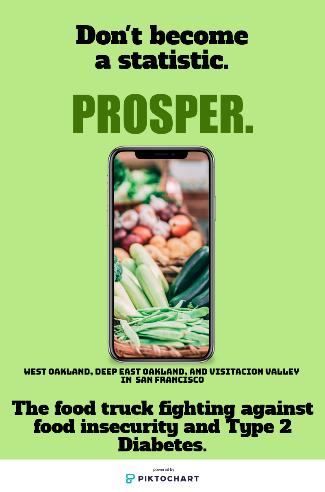

Type 2 Diabetes
Our Prototype
.png)
.png)
As seen above, our solution to Type 2 Diabetes is more of about
preventing than treating. To prevent diabetes in low-income communities
of color, we designed a service called "Prosper". Our service is a food
truck that provides nutritious, fresh produce that can be chosen on our
app, Prosper. The goal of our food truck is to use up to date tools to
encourage healthy eating in the communities that develop Type 2 Diabetes
the most. The purpose of having a food truck is being able to deliver
fresh produce at a more affordable to communities that live far from
grocery stores and cannot afford the prices of the few produce options.
Benefits: Delivering the food to communities that have to drive far distances
for healthy foods means less driving for everyone else. It's not a common
thing for people in low-income communities to drive vehicles that won't do
any harm to the environment, so when there's less people driving, there's less
pollution that harms the environment and leads to more diseases. By preventing Type 2
Diabetes, we can prevent more serious consequences such as heart disease, strokes, etc.
When thinking about the inequalities low-income communities face, affordable health care
is definitely one of them. Usually, the people who live in low-income communities
cannot afford usual check-ups if they have Type 2. If we use our service to prevent
Type 2 Diabetes, then we prevent people from having to dig themselves into a deeper hole
of debt.
